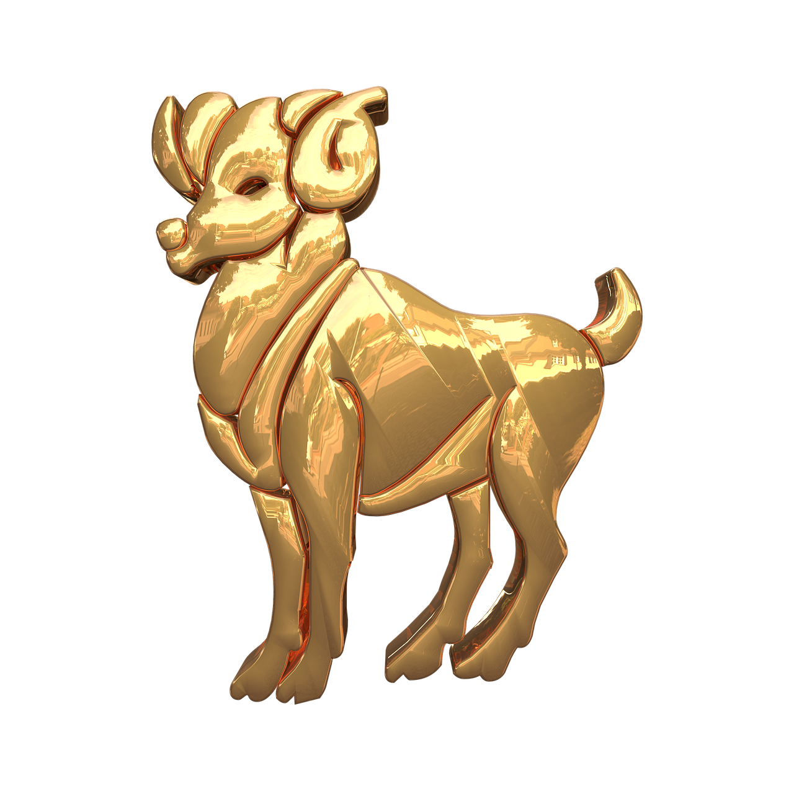
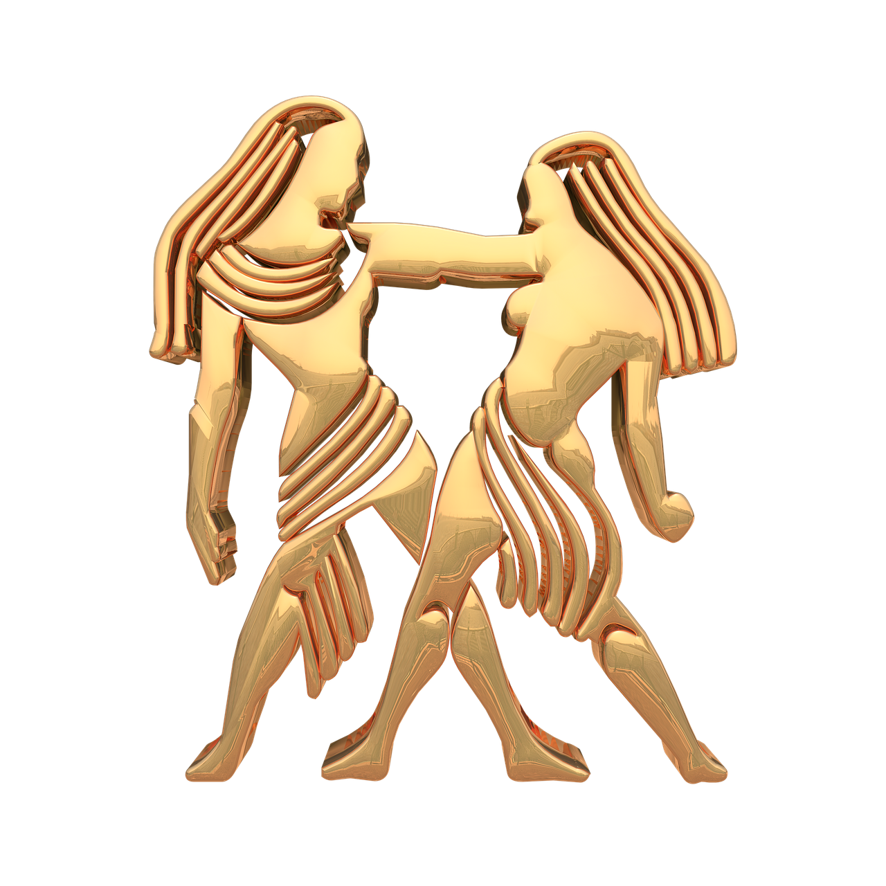
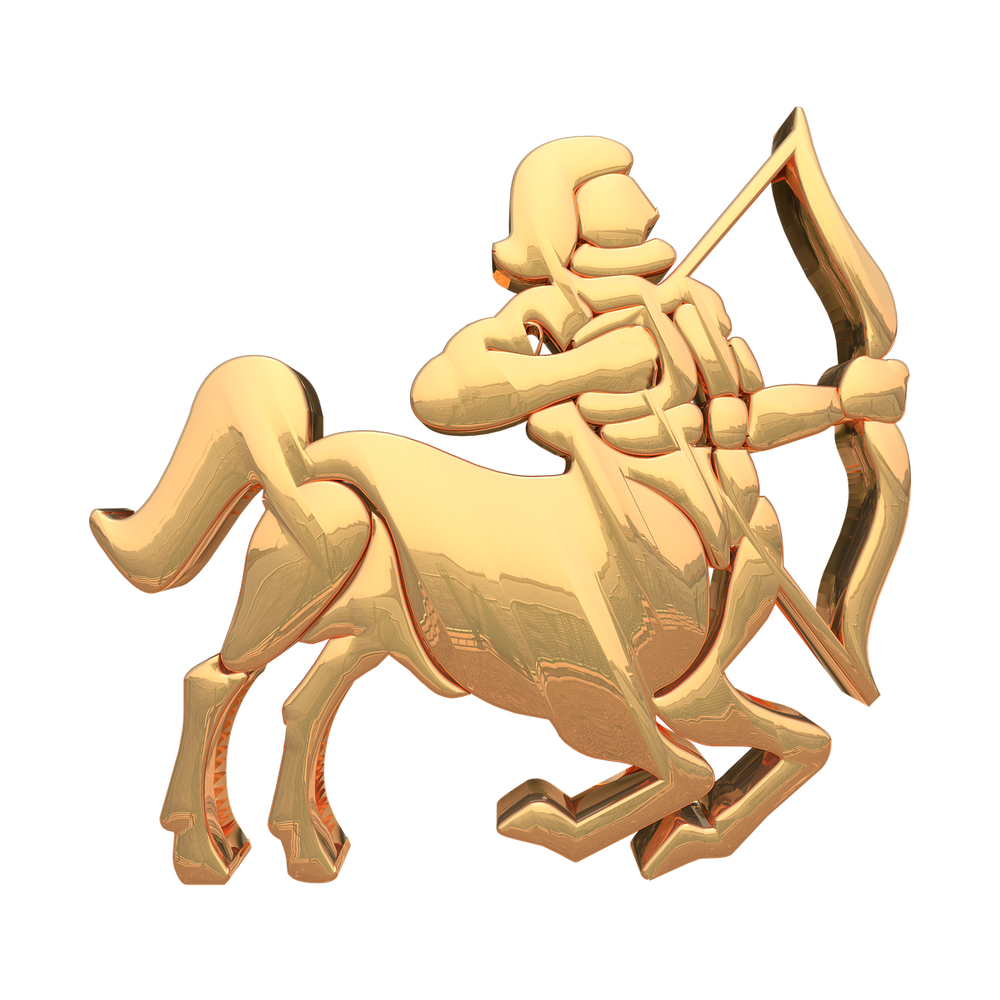

Znak: vođa
Podznak: impulzivan, hrabar
Podznak: impulzivan, hrabar

Znak: stabilnost
Podznak: miran, senzualan
Podznak: miran, senzualan

Znak: komunikacija
Podznak: znatiželjan, brz
Podznak: znatiželjan, brz

Znak: osjećajnost
Podznak: emotivan, brižan
Podznak: emotivan, brižan
Znak: ponos
Podznak: samouvjeren, karizmatičan
Podznak: samouvjeren, karizmatičan

Znak: preciznost
Podznak: analitičan, uredan
Podznak: analitičan, uredan

Znak: ravnoteža
Podznak: šarmantan, uravnotežen
Podznak: šarmantan, uravnotežen

Znak: strast
Podznak: intenzivan, tajanstven
Podznak: intenzivan, tajanstven

Znak: istraživanje
Podznak: slobodan, vedar
Podznak: slobodan, vedar

Znak: ambicija
Podznak: ozbiljan, discipliniran
Podznak: ozbiljan, discipliniran

Znak: inovacija
Podznak: originalan, slobodouman
Podznak: originalan, slobodouman

Znak: empatija
Podznak: maštovit, osjetljiv
Podznak: maštovit, osjetljiv